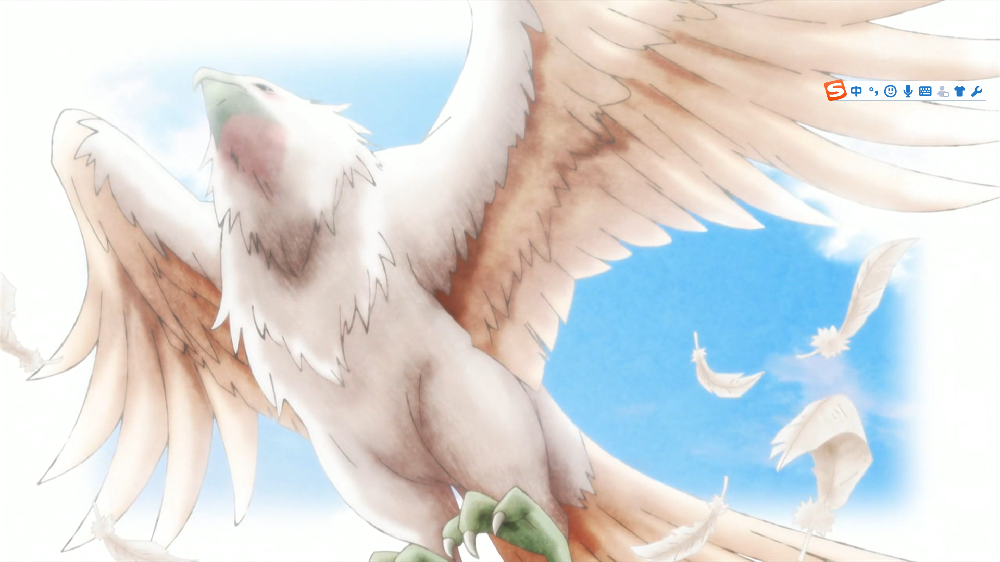
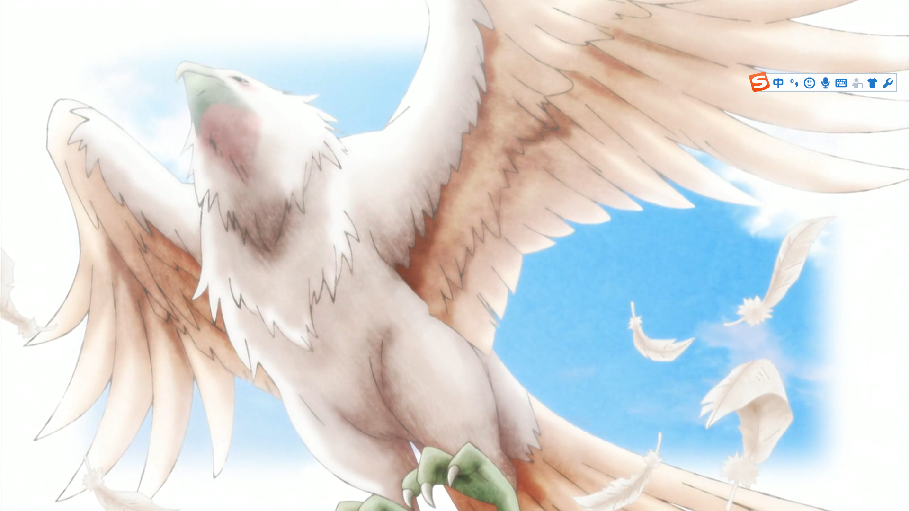
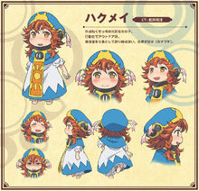
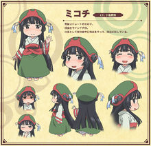
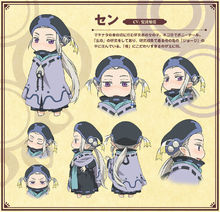

剧情简介
小不点讲述的是什么故事
文章作者 文章发表时间
两个小人女孩御子地跟白明，原本不相识的两人误打误撞而住在同一个屋檐下。
白明是个红毛行动派，某天看到报纸上有人目击到夕阳鹰出没，马上就准备好东西拉着御子地上山去等夕阳鹰，后来才发现原来夕阳鹰曾经是御子地在 10 年前曾经短暂饲养过的白鸟。
而御子地则是黑发理性派，擅长家务料理而且还特别擅长唱歌（本人没有自觉），两个小人妹子在大树根下的房屋中一起生活与各种各样的小人朋友相遇相识.
两个小人女孩御子地跟白明，原本不相识的两人误打误撞而住在同一个屋檐下。
白明是个红毛行动派，某天看到报纸上有人目击到夕阳鹰出没，马上就准备好东西拉着御子地上山去等夕阳鹰，后来才发现原来夕阳鹰曾经是御子地在 10 年前曾经短暂饲养过的白鸟。
而御子地则是黑发理性派，擅长家务料理而且还特别擅长唱歌（本人没有自觉），两个小人妹子在大树根下的房屋中一起生活与各种各样的小人朋友相遇相识.
白明

御子地

康居
千

| 放送回 | 漫画话数 | 日文标题 | 中文标题 | 剧本 | 分镜 | 演出 | 作画监督 | 总作画监督 |
| 1 | 1 | きのうの茜 | 昨日的茜红 | 吉田玲子 | 安藤正臣 | 金子美咲 藤田亚耶乃 |
岩佐智子 伊藤麻由加 |
|
| 2 | 舟歌の市场 | 船歌的市场 | ||||||
| 2 | 3 | ふたりの歌姫 | 两位歌姬 | 安藤正臣 | 间岛崇宽 | 嵯峨能世布 | ||
| 4 | ガラスの灯 | 玻璃灯 | ||||||
| 5 | 一服の珈琲 | 一杯咖啡 | ||||||
| 3 | 6 | 星空とポンカン | 星空与芦柑 | 濑村俊一郎 | 福井洋平 | 山田胜 村松上雄 相原理沙 菅原浩真 |
||
| 7 | 仕事の日 | 工作日 | ||||||
| 4 | 8 | 仕事の日２ | 工作日2 | 大河内一楼 | 安藤正臣 | 铃木芳成 | 藤田亚耶乃 安形佳己 成川多加志 樋口博美 难波圣美 |
|
| 9 | ミミズと昔話 | 猫头鹰与往事 | ||||||
| 5 | 10 | 組合の現場 | 工会的现场 | 国泽真理子 | 大桥明代 | 柴田裕介 | 金子美咲 幸野浩二 山形孝二 永田阳菜 |
|
| 11 | 大岩と飼い石 | 巨石与基石 | ||||||
| 6 | 12 | 卵の美容師 | 蛋壳美发师 | 吉田玲子 | 名村英敏 | 野亦则行 | 山田胜 安形佳己 樋口博美 稻田真树 成川多加志 |
|
| 13 | 休みの日 | 休息日 | ||||||
| 14 | 卵の美容師 別の日 | 蛋壳美发师 另一天 | ||||||
| 7 | 15 | 樹上の梯子 | 树上的梯子 | 大河内一楼 | 濑村俊一郎 | 浅见松雄 | 柳孝相 ハンミンギ 山村俊了 |
|
| 16 | 都会的な生活 | 城里人的生活 | ||||||
| 17 | 笑顔の写真 | 笑脸照片 | ||||||
| 8 | 18 | 長い一日 | 漫长的一天 | 国泽真理子 | 大桥明代 | 间岛崇宽 | 幸野浩二 安形佳己 成川多加志 藤田亚耶乃 |
|
| 9 | 19 | 水底のリズム | 水底的律动 | 吉田玲子 | 名村英敏 | 福井洋平 | 嵯峨能世布 | |
| 20 | 凝り性の染め物 | 考究出的染布 | ||||||
| 10 | 21 | 竹の湯 | 竹子温泉 | 国泽真理子 | 木野日优 | 铃木芳成 | 相原理沙 菅原浩真 汉人宽子 安形佳己 西村幸惠 安部正巳 |
|
| 22 | 大根とパイプ | 萝卜和烟斗 | ||||||
| 11 | 23 | 夜越しの汽车 | 通宵火车 | 吉田玲子 | 夕澄庆英 | 野亦则行 | 藤田亚耶乃 山田胜 安形佳己 |
|
| 24 | 雨とテンカラ | 雨和飞蝇 | ||||||
| 12 | 25 | 紅髪の記憶 | 红发的记忆 | 木野日优 安藤正臣 |
笹原嘉文 | 金子美咲 成川多加志 樋口博美 藤田亚耶乃 山田胜 |
||
白明和御子地，是两个住在绿意盎然的森林里的小女孩。今天虽然买了个衣柜，但由于太大而没办法进入玄关的样子。御子地一边烦恼着一边做午饭，此时“夕阳鸢被目击到了”的号外送来了。这是一种羽毛鲜红的大鸟，若在黎明时遇见便可实现一个愿望的传说中的生物。白明从现在开始要去捕捉那只“夕阳鸢”，然而……
到了一年一度的收获祭，在牧奈多的街道上摊位林立，客人众多，热闹非凡。结束了摊位料理的帮忙后，御子地与白明汇合。正好舞台上正在发表今年的歌姬。根据一般投票结果，被选为歌姬的是吟游诗人康居……不仅如此，御子地虽然没有申请但却以同票被选为歌姬。被选的歌姬，必须在第二天到中央广场演唱庆祝之歌，然而……
白明和御子地坐在大角金龟的背上，从早市回来。“商品种类真齐全啊”御子地十分高兴地说道，并把购买的货物满满地放在货物车上运。另一方面，白明想早点回去继续干活。从千那里分到了不错的火药，说想要制作烟花，然而那个火药却放在了室内的窗边……
一天，康居带着香草茶来到白明和御子地的家中祝贺新居筑成。康居看到御子地把新家弄得乱七八糟的样子，但其实那是御子地的工作，制作保存食品和日用品，运往土豆山谷脚下的商店。其店名为“梦品商店”。那个竟然是连康居都成为回头客的人气商店……
白明第一次在工匠师傅，鰯所属的工匠公会“石贯会”露面。惊讶于石贯会巨大的设备之时，副会长火天河会长西风出现了。西风连不属于公会的白明的名字也知道。白明拜托这样的会长，说想要修补石墙，但却被西风拒绝了……
一天白明在森林里找水果时，发现了个蛋形的建筑物。在那里一个名为迦达的人出现了。蛋形建筑是个住所，也是个店铺，理发店“翡翠之蛋”。白明虽然稍有怀疑，不过看上去挺有趣便让她剪头发。一进去室内道具很完备，跟理发店一样。白明在意着，为何这个蛋不会倒下来……
御子地总觉得在家的上方偶尔会发出声响，一天还与白明一起发现了上面多了很多门和梯子。为了弄清全貌，她们决定去敲门，而此时在那里出现的是小锹形虫的小春。御子地本打算鼓起干劲警告她，但小春却战战兢兢地道歉道：“我刚来城市不懂规矩……”。御子地就此平息了怒火……
被康居带路，白明和御子地走在迷宫般的道路上。那里是康居所居住的名为“蜂蜜馆”的地方，馆的格言为“一切皆可”。在无法地带，从艺术家到欺诈师，住着各种各样的人。康居预定要在那样的蜂蜜馆里开演唱会，然而却被什么人给破坏了舞台。似乎是与新人为敌的老手搞的鬼……
千制作了个声音驱动的潜水艇“赛门”。今天不只是白明和御子地，连康居也一起参加了那个潜水实验。靠康居的手鼓声反应逐渐地潜入水底，然而千似乎有点紧张，神经绷紧的样子。此时，顺利穿过水草地带后情绪高涨起来的康居不由得激昂地演奏起来……
因最近工作繁忙，肩膀酸痛的白明突然起兴想去温泉。御子地在读报纸的时候，正好看到了附近开了一家温泉的报道。那里似乎是可以住宿的名为“古怒田温泉”的温泉。得知此事的白明提议出马上就去。于是白明和御子地愉快地前往“古怒田温泉”，然而到了的时候却看到……
临近黎明，白明和御子地坐在板凳上喝咖啡。今天她们打算坐火车去卡诺堪湖钓鱼。御子地不知道有什么必要这么早就出发，而白明以习惯的样子说：“钓鱼就要在早上！”但是两人似乎都没有试过晚上坐火车的样子。到了上车时间两人乘上了火车，走到指定的座位时发现两人的座位被分开了……
白明和御子地在因祭典准备而热闹不已的牧奈多街道上走着。从报纸上看到，以前和白明一起旅行的“绿尾老商队”似乎要路过牧奈多的附近。由于两人打算看一眼商队，所以她们为了在第二天前到达古遥大岩而行动着。白明担心途中会有障碍物，便带了自制炸药。首先她们来到了日野地街道，不过那里如今已成了废路……
邮箱地址请按要求格式输入
密码请为6-16位英文和数字的组合
男 女
运动 艺术 科学